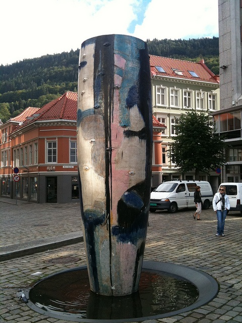
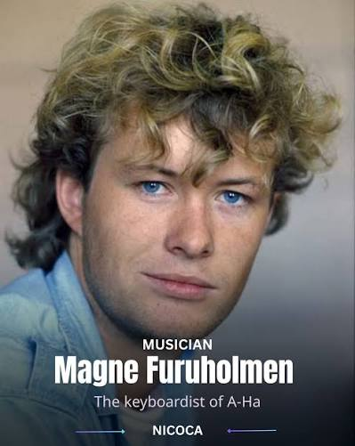
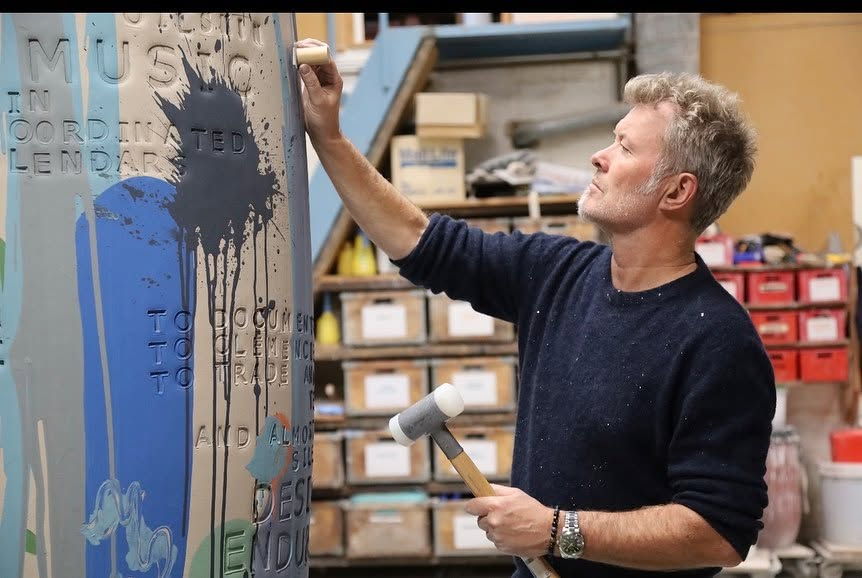

一座約三公尺高的釉陶巨罐，靜靜立在卑爾根港邊廣場的水盤中央——前方是十九世紀的紅磚銀行，身後是終年多雨的港灣。這是我在 Vågsallmenningen 拍下的照片，也是關於這件作品、它的創作者，以及這條街的故事。
這張照片拍攝於卑爾根市中心的 Vågsallmenningen 廣場，靠近魚市場與港口。畫面把十九世紀的建築與當代藝術放在一起，很有卑爾根「古老港都、現代文化城市」的味道：中央是一只藍黑色的巨型陶罐，右側是一棟嚴謹莊重的紅磚建築，遠方山丘覆滿綠意，腳下是潮濕發亮的石板路——這座城市以多雨聞名，陰天的冷色調在照片裡格外明顯。

簡單說，這張照片真正的主題可以理解為：一只現代的「聲音容器」，站在卑爾根古老金融與港口歷史之間，讓過去與現在彼此共鳴。
| 作品名 | Resonance，可譯為「共鳴／共振」 |
|---|---|
| 藝術家 | Magne Furuholmen |
| 年代 | 2003 年 |
| 地點 | 卑爾根市中心 Vågsallmenningen |
| 性質 | 卑爾根市公共藝術委託、永久設置作品 |
| 材質 | 大型釉陶／陶瓷 |
| 高度 | 約 3 公尺 |
| 製作 | 資料顯示與丹麥 Tommerup Ceramic Workshop 有關 |
| 外形 | 巨型、略呈不規則圓筒狀的陶罐，置於圓形淺水盤中 |
藝術家的履歷將它正式列為「Resonance, The City of Bergen, Norway, 2003」，即受卑爾根市委託的公共作品，官方網站也將它列為卑爾根的永久公共藝術。
Magne Furuholmen 生於 1962 年奧斯陸，是挪威視覺藝術家、詩人、作曲家，也是挪威樂團 A-ha 的共同創辦人兼鍵盤手，參與創作〈Take On Me〉等歌曲。但他不是成名後才偶爾玩藝術的流行歌手——他從 1989 年起便持續從事專業視覺藝術創作，媒材包括陶瓷與大型雕塑、版畫木刻與蝕刻、繪畫與玻璃、文字及詩句裝置。語言、文字、記憶、聲音和歷史，是他作品反覆出現的主題。

他的視覺藝術創作靈感來自文學、語言、自傳元素及藝術史，作品融合色彩區塊與銳利線條，融入手寫文字與風格化字體，常以清晰的概念為中心創作系列作品。他的作品曾為美國現代藝術博物館（MoMA）、大英博物館等機構典藏，並取得挪威 Agder 大學美術博士學位；2012 年因對社會的貢獻，獲挪威國王哈拉爾德冊封為聖奧拉夫勳章一級騎士。

英文 resonance 同時有幾層意思：物理上一個物體受到相應頻率影響而振動的共振；中空容器帶來的聲音回響；以及一件事在人的記憶中持續產生影響的情感或文化共鳴。藝術家公開頁面只確認了作品名稱、年份與地點，並沒有留下一段可引用的完整官方釋義，因此以下屬於依作品、場域與藝術家創作脈絡所做的合理解讀，而不是他的逐字說明。
陶器是人類最古老的器物之一，曾用來保存水、食物與珍貴物品。放大後不再具有日常用途，反而像是在容納一座城市的記憶與聲音。
Furuholmen 同時是音樂家與視覺藝術家。樂器依靠空腔產生共鳴，陶罐也具有中空的共鳴空間——「共鳴」把他的兩種創作身分連結起來。
深藍、黑色、灰白的釉色容易讓人聯想到海水、港灣、雨雲與濕潤岩石；下方的圓形水盤又讓陶器與水產生連結，很適合這座多雨的海港城市。
原始、手工、略顯粗獷的陶罐，與周圍整齊嚴謹的紅磚建築形成對比；但陶土和磚塊都經過火燒製成，材質上其實存在一種隱藏的關聯。
《Resonance》看起來像一只被放大到建築尺度的古老陶罐，但並不是光滑、對稱的工業製品。表面可以看到深藍、黑色、灰白及少量青綠色釉彩，流釉與燒製後形成的不均勻色塊，凹陷、突起和類似刻痕的印記，以及保留手工塑形感的不規則輪廓——這些痕跡讓它介於「古老出土器物」「抽象人像」和「現代圖騰」之間。從正面看，深色的痕跡甚至有點像眼睛、鼻子與嘴巴，但目前沒有可靠資料證明藝術家刻意把它做成人臉。
《Resonance》可以視為 Furuholmen 後來巨型陶瓷公共藝術的早期代表。2016 年，他在奧斯陸近郊 Fornebu 完成大型陶瓷雕塑園《Imprints》，同樣出現巨型陶罐、柱體和古代器物形狀，直接壓入陶土的文字與符號，以及陶瓷作品與水池、建築空間的結合——古老工藝與現代都市的對照。《Resonance》雖然只有單一主體，已經預示他日後將陶器放大成紀念碑與建築尺度的創作方向。
Magne Furuholmen 的陶瓷雕塑經常呈現棒狀、柱狀或直立的巨型陶罐，這並不只是造型習慣，而是他刻意建立的一套藝術語言。
建築中的「柱」、儀式性的「圖騰」、保存物品的「陶罐」、記錄歷史的「石碑」、象徵死亡與記憶的「石棺」——這些都是跨越不同文明、存在數千年的基本形體。直立的柱子很像人站立的姿態，即使沒有頭和四肢，也會讓人感覺它是一個具有性格的「存在」。《Imprints》作品集明確指出，他是有意採用雙耳陶罐、柱子與石棺等古老形式，再放進俐落的現代建築環境中，製造古代與現代的對比。
Magne 早期從事版畫和木刻，經常把文字、字母及詩句壓印在平面上。改用陶土後，他仍延續「留下印記」的創作方法：將字母直接壓入濕陶土、刻入自寫的詩句、保留手指與工具及燒製的痕跡、讓釉料沿垂直表面自然流動。柱狀表面就像一張可以環繞閱讀的立體長紙卷，觀眾必須繞著作品行走，才能逐漸看到全部文字和痕跡——這也是他的大型陶瓷公園命名為《Imprints（印記）》的原因。
Magne 首先為人熟悉的身分是 A-ha 鍵盤手。從音樂角度看，一排高低不同的直立柱體，很像樂譜上的音符、錄音軟體中的聲波、均衡器上下起伏的音量柱。例如《Imprints》將九根高約 2 至 4 公尺的柱子排列在長形水池中，觀眾行走時柱子依序出現，很像視覺化的音樂節奏——不過這是根據他同時身為音樂家與藝術家的脈絡所作的解讀，並非藝術家明確表示「每根柱子就是一個音符」。
一般陶罐是手可以捧起來的生活器物；Magne 把它放大到 3 至 6 公尺後，原來的功能消失了，轉而變成建築、人形、圖騰、城市地標，以及保存集體記憶的容器。《Resonance》便是這種轉換：它基本上是一只約 3 公尺高的巨型陶罐，但放在廣場上後，看起來既像一個人，又像一座紀念碑。
公共藝術必須在高樓、街道與廣場中仍然看得見。細長直立的作品不會完全遮住後面的歷史建築，能呼應建築立柱、窗戶與人的直立姿態，觀眾可從四面觀看，也容易在水池與燈光中形成倒影——遠處看是清晰的地標，近看又能閱讀表面細節。在這張照片裡，《Resonance》的垂直形體正好與右側舊銀行規律排列的直立窗戶互相呼應。
棒狀雕塑很自然會讓人聯想到男性生殖器、權力或生命力，這在藝術史上確實是一種可能解讀。但目前找到的可靠資料中，Magne 沒有明確表示《Resonance》或所有柱狀作品都以此為主題。比較準確的理解是：它可能具有男性、生命力或權力的聯想，但作品的主要脈絡仍是古代陶器、圖騰、建築柱體、文字載體及紀念碑，而不只是生殖象徵。
簡單地說，Magne 反覆使用柱狀造型，是因為這個形體可以同時像「人、陶罐、石碑、圖騰、建築與節拍」——它簡單，卻能承載很多層意義。
照片右邊是昔日的挪威中央銀行卑爾根分行，地址為 Vågsallmenningen 12。建築由 Ole Petter Riis Høegh 設計，約在 1842 至 1844 年間建成，融合晚期帝政式與新文藝復興風格：一樓是厚重的灰色石材與拱形門窗，表現銀行需要的安全感；上層紅磚、規律排列的窗戶，形成嚴謹而莊重的立面。建築在 1986 年被列為受保護古蹟。
如今樓上是國際當代藝術中心 Kunsthall 3,14，照片中因此形成了一個很巧妙的關係：昔日保存金錢的銀行，現在轉變成保存與展示思想、文化和藝術的地方。
Vågsallmenningen 是一條由港口向城市內部延伸的寬闊公共空間。「Allmenning」是卑爾根很有特色的都市規劃概念，指的是市民共享的寬闊街道或廣場；歷史上除了集會與通行，也能形成防火間隔，避免木造城市發生火災時火勢迅速蔓延。
照片裡潮濕發亮的石板路也非常「卑爾根」——這座城市以多雨聞名。陰天的冷色調、歷史紅磚建築，以及中央深藍色的《共鳴》，共同呈現一種沉靜、厚重而帶著海港氣息的氛圍。
A-ha 是挪威最成功、國際知名度最高的流行樂團之一，1982 年在奧斯陸組成，融合了 Synth-pop（合成器流行）、新浪潮、流行搖滾與抒情音樂。樂團名稱正式寫作 a-ha，發音近似英文驚嘆詞「啊哈！」。Paul 與 Magne 從小是朋友，1970 年代末在奧斯陸組成搖滾樂團 Bridges，解散後想找一位音域出眾的主唱，邀請當時住在 Asker 附近的 Morten 加入，三人於 1982 年正式形成 A-ha，隨後前往倫敦發展。
音域寬廣、真假音轉換鮮明，是樂團最具辨識度的聲音。出生於 Kongsberg，成長於 Asker。
樂團早期多數經典歌曲的核心創作者，歌詞常談時間流逝、分離與孤獨。出生成長於奧斯陸。
建構合成器音色，也是視覺藝術家及《Resonance》作者。出生於奧斯陸，成長於 Manglerud 地區。
A-ha 最著名的作品是 1985 年的〈Take On Me〉，但這首歌並非推出後立刻成功：早期版本在 1984 年發行只賣出約 300 張，英國排行榜最高僅第 137 名。唱片公司重新製作歌曲，並邀請導演 Steve Barron 拍攝真人與鉛筆漫畫互相穿越、以「轉描」技術製成的突破性音樂錄影帶。新版推出後，〈Take On Me〉於 1985 年登上美國 Billboard 單曲榜冠軍，A-ha 也成為第一組進入該排行榜的挪威藝人，MV 更在 1986 年 MTV 音樂錄影帶大獎拿下最佳概念、最佳新人等獎項。
A-ha 在美國有時被誤認為「一曲歌手」，但在歐洲、南美及挪威擁有長達四十年的成功生涯，代表作還包括〈The Sun Always Shines on T.V.〉〈Hunting High and Low〉〈I've Been Losing You〉〈Stay on These Roads〉，以及 1987 年詹姆士・龐德電影主題曲〈The Living Daylights〉。1991 年他們在里約熱內盧馬拉卡納體育場演出，付費觀眾約 19 萬 8 千人，是樂團歷史上最著名的現場演出之一。樂團最近一張全新錄音室專輯是 2022 年在挪威博德錄製、與北極愛樂樂團合作的《True North》。2025 年 6 月，主唱 Morten Harket 公開自己罹患帕金森氏症，這會影響他未來的歌唱與現場活動。
A-ha 不是在卑爾根成立的；卑爾根與樂團真正的連結，是鍵盤手 Magne 後來受卑爾根市委託，於 2003 年創作了這件公共藝術《Resonance》。